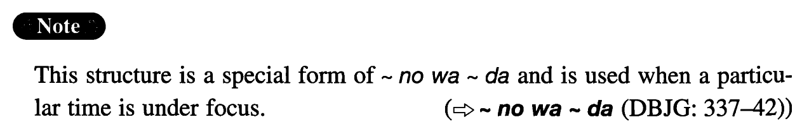

←
DoJG
→
のは~のことだ
(I. 313)
Example sentences
(ks).
吉田さんと最後に会った
のは
１９８５年の五月
のことだ
。
It was in May 1985 that I last met Mr. Yamada.
(a).
日本語の面白さが分かり始めた
のは
ごく最近
のことだ
。
It was only recently that I began to understand how interesting Japanese is.
(b).
本格的なロボットが現れた
のは
１９６０年代後半
のことである
。
It was in the late sixties when genuine robots came out.
(c).
ゲラ刷りが出来る
のは
来月の終わり
のこと
になるだろう。
It will be around the end of next month when we get galley proofs.
(d).
父が公務員だった
のは
私がまだ学校へ行く前
のことだ
。
It was before I went to school that my father was a government worker.
(e).
日本製品の評判が悪かった
のは
戦後二十年くらいの間
のことだ
。
It was for a period of about twenty years after World War II that the reputation of Japanese products was bad.
(f).
健一と利子が仲良く歩いているところを見た
のは
つい一か月ほど前
のこと
なのに彼らはもう別れたという話だ。
Although it was only (about) a month ago when I saw Ken'ichi and Toshiko walking together intimately, I heard they've already split up.
Formation
Sinformal
のは
Noun
のことだ
(the same formation as のだ)
話した
のは
去年
のことだ
It was last year when someone talked…
